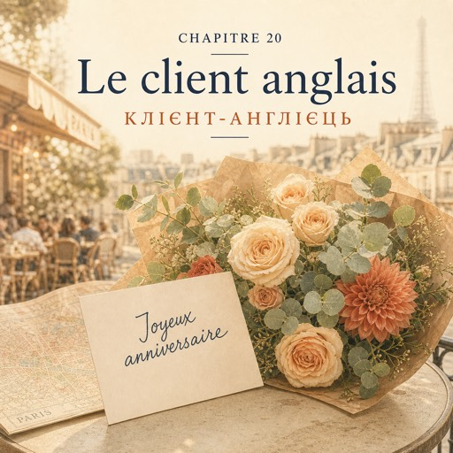

0:00
3:38
Натисніть речення, щоб почути його окремо.
Щоб слухати з підсвіткою — відкрийте сторінку в браузері.
Le samedi 18 octobre — субота, 18 жовтня
La porte ne se ferme pas.
Двері не зачиняються.
Le samedi, c'est comme ça : elle s'ouvre, quelqu'un entre, elle s'ouvre encore.
У суботу завжди так: відчиняються, хтось заходить, і знову відчиняються.
Karim coupe les tiges. Natalia vend.
Карім ріже стебла. Наталя продає.
À onze heures, il y a quatre personnes qui attendent.
Об одинадцятій четверо людей чекають своєї черги.
L'homme attend son tour près de la porte.
Той чоловік чекає біля дверей.
Soixante ans, une casquette, et un plan de Paris qu'il n'ouvre pas.
Шістдесят років, кепка, і план Парижа, який він так і не розгортає.
— Bonjour. Je voudrais... des flowers. Pardon. Des fleurs.
— Добрий день. Я хотів би… flowers. Перепрошую. Квіти.
— Bonjour. Ici, il y a des fleurs.
— Добрий день. Квіти тут є.
Il rit. Tout de suite, c'est plus facile.
Він сміється. І одразу стає легше.
— C'est pour offrir ?
— Це в подарунок?
— Pardon ? Vous pouvez répéter ?
— Перепрошую? Можете повторити?
— C'est un cadeau ?
— Це подарунок?
— Ah ! Oui. Un cadeau. Pour ma... wife. Comment on dit ?
— А! Так. Подарунок. Для моя… wife. Як це сказати?
— Votre femme.
— Ваша дружина.
— Ma femme. Vingt-cinq ans de... marriage. Aujourd'hui.
— Моя дружина. Двадцять п'ять років… marriage. Сьогодні.
— Vingt-cinq ans de mariage. Félicitations.
— Двадцять п'ять років шлюбу. Вітаю.
Natalia parle plus lentement. Pas plus fort. Plus lentement.
Наталя говорить повільніше. Не голосніше. Повільніше.
— Sorry. Mon français est terrible.
— Sorry. Моя французька жахлива.
— Mon français aussi.
— Моя теж.
— Non. Vous, vous parlez.
— Ні. Ви — ви говорите.
Elle ne répond pas. Elle pose la question suivante.
Вона не відповідає. Вона ставить наступне питання.
— Elle aime le rouge ?
— Вона любить червоне?
— Oui, le rouge. Un rose rouge ?
— Так, червоне. Один червона троянда?
— Une rose rouge.
— Одна червона троянда.
— Une rose rouge. D'accord.
— Одна червона троянда. Добре.
— Et les grandes fleurs ou les petites ?
— А великі квіти чи дрібні?
— Grandes fleurs ? Petites fleurs ?
— Великі квіти? Дрібні квіти?
— Ah ! Les grandes. Les grandes, oui.
— А! Великі. Великі, так.
— Vous voulez un grand bouquet ?
— Хочете великий букет?
— Un bouquet grand. Grand bouquet. Sorry.
— Букет великий. Великий букет. Sorry.
— C'est ça. Et vous voulez dépenser combien ?
— Саме так. А скільки хочете витратити?
— Plus lentement, s'il vous plaît.
— Повільніше, будь ласка.
— Qua-rante euros ? Cin-quante ?
— Со-рок євро? П'ят-де-сят?
— Quarante. Cinquante, si c'est beau.
— Сорок. П'ятдесят, якщо буде гарно.
Il montre les chrysanthèmes près de la porte.
Він показує на хризантеми біля дверей.
— Et ça ? C'est joli, ça.
— А оце? Оце гарне.
— Ça, non. En France, c'est pour les morts.
— Оце — ні. У Франції це для померлих.
— Oh. Oh non. Merci !
— О. О ні. Дякую!
Il rit très fort. Deux clientes se retournent.
Він регоче на весь магазин. Дві клієнтки обертаються.
Natalia prend neuf roses rouges. Cinq dahlias. Un peu d'eucalyptus.
Наталя бере дев'ять червоних троянд. П'ять жоржин. Трохи евкаліпта.
Le papier. Deux tours de ruban.
Папір. Два оберти стрічки.
— Vous voulez une carte ?
— Хочете листівку?
— Oui. Comment on écrit « happy anniversary » ?
— Так. Як пишеться «happy anniversary»?
— Joyeux anniversaire.
— «Joyeux anniversaire» — щасливої річниці.
Elle écrit les deux mots sur un papier.
Вона пише ці два слова на папірці.
Il copie, lettre par lettre, très sérieusement.
Він переписує, літера за літерою, дуже серйозно.
— Ça fait combien ?
— Скільки з мене?
— Neuf roses, vingt-sept euros. Cinq dahlias, douze euros cinquante. L'eucalyptus, quatre euros.
— Дев'ять троянд — двадцять сім євро. П'ять жоржин — дванадцять євро п'ятдесят. Евкаліпт — чотири євро.
— Ça fait quarante-trois euros cinquante.
— Разом сорок три євро п'ятдесят.
— Pardon ? Répétez, s'il vous plaît.
— Перепрошую? Повторіть, будь ласка.
— Qua-rante-trois euros cin-quante.
— Со-рок три євро п'ят-де-сят.
— Quarante-trois cinquante. C'est ça ?
— Сорок три п'ятдесят. Так?
Il paie par carte.
Він платить карткою.
Il prend le bouquet à deux mains, comme un enfant.
Бере букет обома руками, як дитина.
— Merci. Vous avez été très... patient. Patiente.
— Дякую. Ви були дуже… терплячий. Терпляча.
— Patiente. C'est ça.
— Терпляча. Саме так.
— Vous êtes française ?
— Ви француженка?
— Non. Ukrainienne.
— Ні. Українка.
— Ah ! Moi, Manchester. Bonne journée !
— А! А я — Манчестер. Гарного дня!
La porte se ferme derrière lui.
Двері за ним зачиняються.
— Nathalie. Quarante-trois cinquante. C'est ouf, dit Karim.
— Наталі. Сорок три п'ятдесят. C'est ouf, — каже Карім.
— « Ouf », c'est « fou » à l'envers. C'est fou. C'est la plus grosse vente de la semaine.
— «Ouf» — це «fou» навпаки. Божевілля. Це найбільший продаж за тиждень.
À une heure, il y a encore six personnes dans le magasin.
О першій у магазині ще шестеро людей.
Le soir, dans le carnet, il n'y a pas de mot nouveau.
Увечері в блокноті немає жодного нового слова.
Il y a une phrase : « Plus lentement, s'il vous plaît. »
Там одна фраза: «Plus lentement, s'il vous plaît» — «Повільніше, будь ласка».
Ce n'est pas elle qui l'a dite aujourd'hui.
Сьогодні цю фразу сказала не вона.